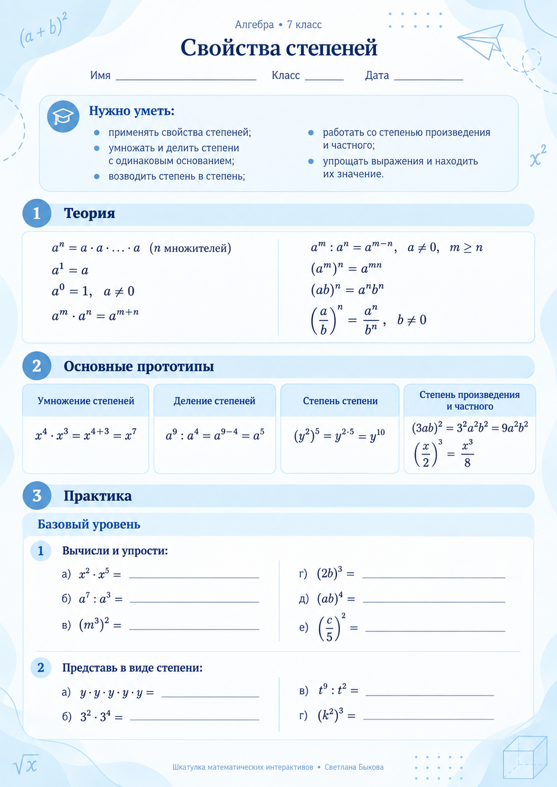
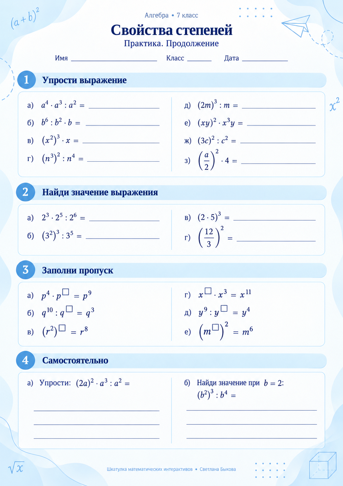
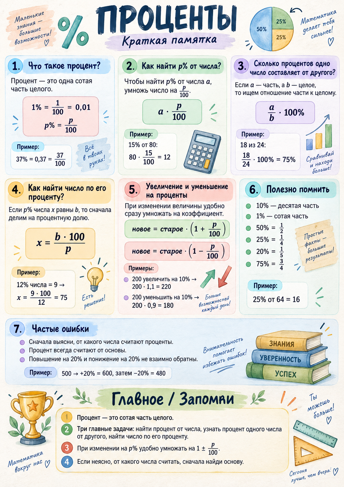
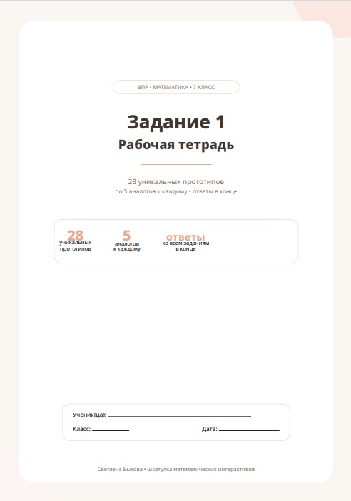
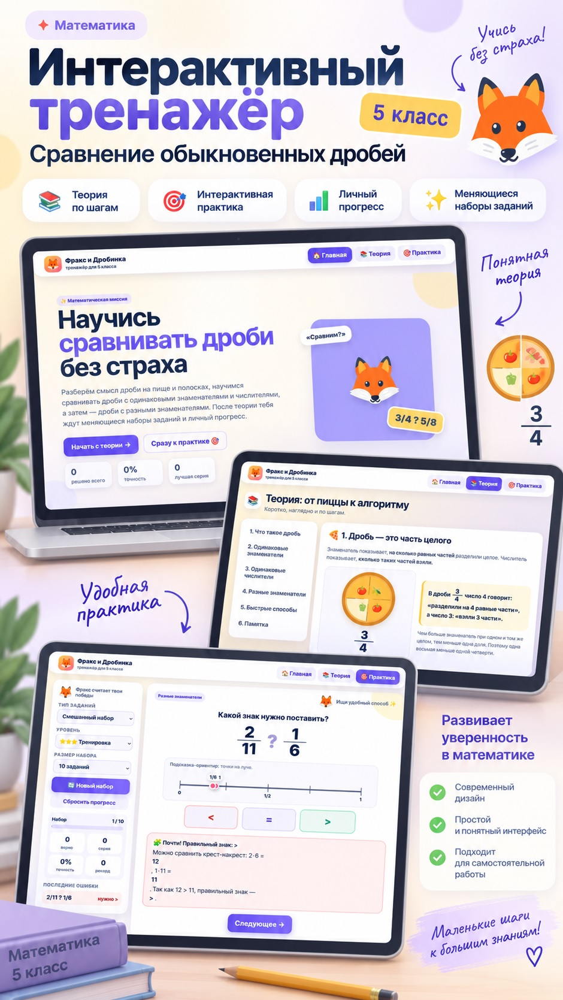

Видеоурок 01Создание
Создаём интерактивный тренажёр
Пошагово создаём HTML-тренажёр: задания, проверка ответов, подсказки, логика переходов и готовый код, который можно сразу открыть в браузере.
Закрытые материалы
Введите пароль, который вы получили после оплаты. После входа откроются видеоуроки, промпты и примеры материалов.
Практикум для преподавателей
Создаём цифровые материалы с нейросетями: интерактивный тренажёр, рабочую тетрадь, публикацию в интернете и собственную библиотеку готовых решений.
Сначала посмотрите два видеоурока — лучше по порядку и сразу пробовать повторять шаги у себя. Под видео можно скачать готовые файлы. А ниже на странице вас ждут короткая памятка по Netlify, мои примеры разработок, промпты и материалы для скачивания. В самом низу я также оставлю отдельный архив с референсами фонов для учебных разработок — его можно будет скачать и использовать как отправную точку для собственного оформления.
Модуль 01
Пошагово создаём HTML-тренажёр: задания, проверка ответов, подсказки, логика переходов и готовый код, который можно сразу открыть в браузере.
Размещаем тренажёр на Netlify и создаём рабочую тетрадь без теории: только перечень заданий ВПР 7 класса, задание 1, в удобном формате для работы.
Отдельный шаг
Короткая памятка: после создания HTML-файла вы быстро превращаете его в готовую ссылку для учеников и коллег.
Шаг 1. Сохраните код тренажёра как index.html.
Шаг 2. Откройте Netlify. Перейти в Netlify ↗ Нет аккаунта? Зарегистрироваться ↗
Шаг 3. В разделе Projects найдите область загрузки проекта и перетащите туда файл index.html или папку проекта.
Шаг 4. Дождитесь публикации, протестируйте сайт и скопируйте готовую ссылку.
Модуль 02
Здесь собраны готовые примеры материалов и промпты, которые можно скопировать и адаптировать под свой предмет, класс и тему.
Я сама обычно не пользуюсь заранее заготовленными длинными промптами. Чаще всего я просто наговариваю или пишу своими словами, что именно хочу получить, смотрю на результат и дальше веду диалог с чатом: прошу что-то изменить, убрать, добавить, перестроить или оформить по-другому.
Промпты ниже я предлагаю как удобную опору для тех, кому комфортнее работать с готовым запросом. Важно: эти результаты я получила не по готовым промптам — наоборот, многие промпты я составила уже по итоговому результату, чтобы коллегам было проще повторить похожий путь. Поэтому воспринимайте их не как строгую формулу, а как отправную точку, которую можно свободно менять под себя.


Пример 01
Готовый пример по теме «Свойства степеней» можно скачать, а ниже — промпт, по которому коллеги смогут собрать свой рабочий лист в похожей логике.
Персиковым выделено то, что нужно заменить под свой материал.
Используй прикреплённое изображение как визуальный референс для фона и общей стилистики рабочего листа. Не копируй его механически: сохрани настроение, палитру и характер, но адаптируй фон под печатный учебный материал. Фон должен быть светлым и ненавязчивым, с достаточным контрастом для текста и математических записей. Работай как опытный методист и дизайнер учебных материалов. Создай готовый рабочий лист формата A4 по [ПРЕДМЕТ: алгебра] для [КЛАСС: 7 класс] по теме «[ТЕМА: свойства степеней]». Методическая задача: — выдели ключевые знания и умения по этой теме; — отберите основные прототипы заданий, которые ученик должен уметь решать; — выстрой материал от понимания правила к самостоятельному применению; — не перегружай страницу: материал должен быть компактным, ясным и пригодным для реальной работы на уроке. Структура рабочего листа: 1. Заголовок темы. 2. Короткий блок «Теория»: только основные свойства, правила и формулы, без лишнего текста. 3. Блок «Основные прототипы»: покажи главные типы заданий по теме и для каждого дай понятный образец или опору. 4. Блок «Практика»: задания от базовых к более сложным, чтобы ученик последовательно отработал все выделенные прототипы. 5. Оставь достаточно места для вычислений и записи ответа. 6. Если материал занимает несколько страниц, не разрывай один смысловой блок или разобранный пример между страницами. Математическое оформление: — все формулы, степени, дроби и математические выражения набирай аккуратно, как в LaTeX; — не заменяй математическую запись обычным текстом там, где нужна формула; — следи за корректностью индексов, степеней, знаков и скобок. Дизайн: — используй прикреплённый референс как основу визуального направления; — сделай оформление современным, эстетичным, спокойным и профессиональным; — декоративные элементы не должны конкурировать с заданиями; — фон под текстом должен оставаться максимально читаемым; — сохрани единый стиль на всех страницах. Перед финальной выдачей проверь каждое задание и все математические записи. Убедись, что задания соответствуют теме и уровню [КЛАСС: 7 класс]. Внизу каждой страницы аккуратно подпиши: «[ПОДПИСЬ / БРЕНД: Шкатулка математических интерактивов • Светлана Быкова]». Итог: создай готовый рабочий лист, который можно сохранить и распечатать как PDF.

Пример 02
Ниже — готовый промпт для вертикальной карточки-памятки: её можно адаптировать под другой класс, тему, стиль или собственный бренд.
Персиковым выделено то, что педагог может заменить под свой предмет, класс, стиль и подпись.
Создай вертикальную учебную карточку-памятку по [ПРЕДМЕТ: математике] на тему «[ТЕМА: проценты]» для [ЦЕЛЕВАЯ АУДИТОРИЯ: школьника / 5–9 класс]. По визуальному стилю ориентируйся на красивую современную школьную шпаргалку: светлый молочно-бумажный фон с лёгкой фактурой, акварельные иллюстрации, рукописные заголовки, аккуратные цветные информационные блоки со скруглёнными углами, небольшие тематические рисунки и математические символы. Общая эстетика — уютная, понятная, дружелюбная, как качественно оформленная страница рабочей тетради. Самостоятельно разработай содержание карточки по теме «[ТЕМА: проценты]». Проанализируй, какие знания по этой теме наиболее важны школьнику, и сам выбери: — основные понятия и правила; — ключевые формулы; — наиболее полезные способы решения; — короткие понятные примеры; — важные замечания и типичные моменты, в которых ученики ошибаются; — итоговый мини-блок с самым главным для запоминания. Не перегружай карточку редкими или второстепенными сведениями. Материал должен образовывать логичную систему от базовых идей к более сложным, чтобы по одной карточке можно было быстро повторить тему перед уроком, контрольной или экзаменом. Раздели материал на несколько визуально самостоятельных пронумерованных блоков. Для каждого блока придумай короткий содержательный заголовок. Формулы размещай отдельно и делай визуально заметными. Примеры должны быть короткими и действительно помогать понять правило, а не просто заполнять место. Внизу сделай отдельную компактную область вроде «Главное» / «Запомни», в которой самостоятельно сформулируй несколько самых полезных выводов по всей теме. Добавь небольшие тематические акварельные иллюстрации: математические символы, диаграммы, стрелки, калькулятор, геометрические схемы или другие подходящие образы. Иллюстрации должны поддерживать содержание, но не мешать чтению. Цветовая гамма мягкая и пастельная: [ПАЛИТРА: оттенки синего, зелёного, лавандового, охристого и терракотового]. Каждый смысловой блок может иметь собственный лёгкий цветовой акцент, но вся страница должна выглядеть цельно. Весь текст только на русском языке. Используй грамотные математические обозначения и корректные вычисления. Текст должен быть хорошо читаемым, без бессмысленных букв, искажённых слов и псевдотекста. Не уменьшай шрифт ради размещения большего количества материала — лучше сократи содержание. Композиция: вертикальная учебная инфографика, примерно формат A4, чёткая визуальная иерархия, крупный заголовок сверху, далее сетка тематических блоков, внизу итоговый блок. Оставляй достаточно воздуха между элементами. Внизу карточки аккуратно подпиши: «[ПОДПИСЬ / БРЕНД: Шкатулка математических интерактивов • Светлана Быкова]». Итог должен выглядеть как готовая профессиональная карточка-памятка в PDF, которую можно распечатать и использовать на уроке.

Пример 03
Шаблон подробного запроса для создания большой рабочей тетради по исходному PDF: анализ прототипов, аналоги, ответы, вёрстка и обязательная проверка готового файла.
Персиковым выделено то, что педагог может заменить под свой класс, предмет, номер задания, количество аналогов, оформление и бренд.
Я прикрепляю PDF с заданиями [ПРОВЕРОЧНАЯ РАБОТА: ВПР] по [ПРЕДМЕТ: математике] для [КЛАСС: 7 класса]. На его основе создай полноценную рабочую тетрадь по [НОМЕР ЗАДАНИЯ: заданию № 1 ВПР, 7 класс] и в конце выдай мне готовый PDF. 1. Сначала проанализируй все исходные задания В PDF может быть много отдельных заданий, но не считай автоматически каждое задание отдельным прототипом. Сначала внимательно проанализируй все задания из файла и найди среди них пересечения. Под пересечением я понимаю задания, которые имеют одинаковую математическую структуру и проверяют один и тот же способ действия, даже если: — отличаются числа; — немного изменён порядок чисел; — используются другие дроби или десятичные числа; — внешне выражения немного отличаются, но алгоритм вычислений полностью совпадает. Такие задания объедини в один прототип. Не дублируй одинаковые типы заданий только потому, что в исходном PDF они представлены несколько раз. В итоговой тетради должен остаться: 1 уникальный математический прототип → [КОЛИЧЕСТВО АНАЛОГОВ: 5] аналогичных заданий к нему. Для этого конкретного комплекта, если я прикрепляю тот же исходный PDF с [КОЛИЧЕСТВО ИСХОДНЫХ ЗАДАНИЙ: 50] заданиями, дополнительно проверь результат дедупликации: ранее после анализа получилось [КОНТРОЛЬНОЕ ЧИСЛО: 28 уникальных прототипов]. Не принимай это число вслепую — самостоятельно перепроверь все задания, но если анализ выполнен правильно, результат должен совпасть. 2. Составь аналоги Для каждого уникального прототипа: — сначала напечатай исходный прототип; — затем создай ровно [КОЛИЧЕСТВО АНАЛОГОВ: 5] аналогов; — аналоги должны проверять тот же математический навык и иметь ту же структуру решения, что и прототип; — меняй числа, дроби, десятичные числа и другие числовые данные; — не делай аналоги механическими копиями с заменой одного числа; — уровень сложности должен соответствовать [УРОВЕНЬ / КЛАСС: ВПР для 7 класса]; — избегай неоправданно громоздких вычислений; — если в исходном прототипе требуется ответ в виде несократимой дроби, сохрани это условие и для аналогов; — обязательно самостоятельно вычисли и перепроверь все ответы. 3. Математическое оформление Всё математическое оформление должно выглядеть как качественная LaTeX-вёрстка. Обязательно: — обыкновенные дроби печатай только как двухэтажные дроби с горизонтальной дробной чертой; — не используй запись дробей через /; — смешанные числа оформляй математически грамотно; — знак умножения — ·; — знак деления — :, если именно такой формат соответствует исходному заданию; — минусы, скобки, десятичные запятые и математические знаки должны быть типографически аккуратными; — выражения должны легко читаться и не сливаться друг с другом. 4. Структура блока каждого прототипа Каждый блок должен содержать: Прототип N Исходный прототип: математическое выражение затем задания: 1. … 2. … 3. … 4. … 5. … Справа или рядом с каждым заданием оставь аккуратное место/линию для записи ответа учеником. Если для прототипа есть специальное требование, например «Ответ запишите в виде несократимой дроби», размести небольшое пояснение внутри соответствующего блока. 5. Вёрстка страниц Ни один блок прототипа не должен разрываться между двумя страницами. Если весь прототип вместе с [КОЛИЧЕСТВО АНАЛОГОВ: пятью] аналогами не помещается до конца страницы, перенеси весь блок целиком на следующую страницу. При этом: — располагай материал рационально; — не оставляй огромных пустых областей без необходимости; — не набивай страницу слишком плотно; — соблюдай одинаковые интервалы между заданиями; — страницы тренажёра должны выглядеть одинаково; — особенно проверь, чтобы вторая страница тренажёра не отличалась по стилю, размерам, отступам и структуре от третьей и последующих страниц. Не делай отдельную страницу «Как работать с тетрадью», инструкции по использованию, пояснения для учителя и другие служебные страницы. После обложки должен сразу начинаться тренажёр. 6. Колонтитулы На всех рабочих страницах сделай верхний колонтитул: слева: «[ИМЯ АВТОРА: Светлана Быкова]» справа: «[БРЕНД: шкатулка математических интерактивов]». Колонтитул должен быть лёгким, аккуратным и не отвлекать от заданий. 7. Дизайн Формат — [ФОРМАТ: A4], удобный для обычной печати. Стиль: — современный; — минималистичный; — эстетичный; — нежный; — профессиональный; — не детский и не устаревший; — без излишнего декора. Цветовая гамма: — [ПАЛИТРА: нежные персиковые, кремовые, очень светлые бежево-персиковые оттенки]; — тёмный спокойный цвет текста. Цвет должен использоваться деликатно, чтобы тетрадь хорошо выглядела и при цветной печати, и оставалась читаемой при обычной печати. Блоки прототипов можно оформлять: — очень светлым персиковым фоном; — тонкой персиковой рамкой; — чуть более насыщенной полосой с названием «Прототип N». Не используй тяжёлые рамки, яркие заливки, клипарт, мультяшные элементы и старомодные декоративные шрифты. 8. Первая страница Сделай отдельную современную обложку. На ней должны быть: «[НАЗВАНИЕ РАБОТЫ: ВПР • МАТЕМАТИКА • 7 КЛАСС]» «[НОМЕР ЗАДАНИЯ: Задание 1]» «Рабочая тетрадь». Укажи фактическое число уникальных прототипов после анализа исходного PDF, а не исходное количество заданий. Также можно указать: «[КОЛИЧЕСТВО АНАЛОГОВ: 5 аналогов к каждому]» «ответы в конце». Оставь поля: Ученик(ца): __________ Класс: __________ Дата: __________ Обложка должна быть заметно более современной, чем обычный школьный шаблон: чистая композиция, много воздуха, современная типографика, мягкие геометрические формы, аккуратные карточки или минималистичные элементы в выбранной палитре. При этом не перегружай её. 9. Ответы После последнего прототипа обязательно поставь принудительный разрыв страницы. Раздел «ОТВЕТЫ» должен начинаться с новой отдельной страницы. Никогда не начинай ответы на той же странице, где расположен последний прототип. В ответах для каждого прототипа укажи: — ответ к исходному прототипу; — ответы к аналогам 1–[КОЛИЧЕСТВО АНАЛОГОВ: 5]. Например: № | Прототип | 1 | 2 | 3 | 4 | 5 Если ответы содержат обыкновенные дроби, они также должны быть набраны двухэтажными дробями. Обязательно рассчитай высоту строк таблицы с учётом двухэтажных дробей. Ответы ни при каких обстоятельствах не должны накладываться друг на друга. Если таблица не помещается комфортно на одной странице, перенеси её на две или несколько страниц. Лучше сделать больше страниц, чем уменьшать дроби до нечитаемого размера или допускать наложения. 10. Обязательная финальная проверка PDF Перед тем как отправить мне готовый файл: 1. Сгенерируй PDF. 2. Отрендери все страницы PDF в изображения и визуально проверь результат. 3. Проверь: — нет ли разорванных блоков прототипов; — одинаково ли оформлены все страницы тренажёра; — нет ли отличающейся второй страницы; — не обрезаны ли математические выражения; — правильно ли выглядят дроби; — не налезают ли строки друг на друга; — достаточно ли места для ответов ученика; — начинается ли раздел ответов строго с новой страницы; — не накладываются ли ответы и дроби друг на друга; — совпадает ли количество блоков с количеством найденных уникальных прототипов; — у каждого ли прототипа ровно [КОЛИЧЕСТВО АНАЛОГОВ: 5] аналогов; — есть ли ответы ко всем исходным прототипам и всем аналогам. 4. Если обнаружена хотя бы одна проблема — сначала исправь PDF и повтори проверку, а не отправляй промежуточную версию. 11. Проверка содержания Отдельно перепроверь математическую часть: — каждый аналог действительно относится к своему прототипу; — нет случайных дублей среди уникальных прототипов; — все арифметические ответы вычислены правильно; — дроби сокращены там, где это требуется; — десятичные ответы записаны корректно; — исходные прототипы перенесены из моего PDF без искажения математического смысла. 12. Что мне нужно получить Мне нужен один полностью готовый PDF-файл рабочей тетради. Не присылай сначала черновик, код или отдельные страницы для согласования. Сразу выполни полный цикл: анализ PDF → выявление уникальных прототипов → создание [КОЛИЧЕСТВО АНАЛОГОВ: 5] аналогов → вычисление ответов → вёрстка → PDF → визуальная проверка всех страниц → исправление найденных ошибок → финальный PDF. В конце дай мне ссылку на скачивание готового PDF.

Пример 04
Интерактивный урок-практикум: сначала ребёнок разбирается с темой на наглядных примерах, затем переходит к практике и отслеживает свой прогресс.
Персиковым выделены места, которые педагог может заменить под свою тему, возраст учеников и учебный источник.
Создай интерактивный тренажер по теме сравнение обыкновенных дробей. Я хочу, чтобы он был ярким, красивым, с какими-то, может быть, интересными героями на страничке, чтобы было показано сравнение дробей наглядно. В нем есть подводящая теория, может быть, на пицце какой-нибудь показать и т.д.. Можно сперва сравнивать дроби с одинаковым знаменателями, с одинаковым числителем, потом с разными знаменателями, показать все способы. А после этого чтобы ребенок перешел к практике. Можно сделать даже первую страничку такой как содержание, то есть выбираем переходим либо к теории, либо к практике. И ребенок выбирает. Если он выбрал теорию, то после того как он теорию просмотрел, может нажать на кнопку перейти к практике. То есть между разделами можно переходить. Но чтобы это было пятиклассникам интересно. Также на всякий случай прикрепляю тебе учебник, с которого ты можешь посмотреть, каким образом теория представлена в учебнике и какие-то полезные моменты оттуда взять и посмотреть основные типы задач, которые ребенок должен эту тему отработать. Хочется, чтобы были кнопки, что можно менять наборы заданий, ну и чтобы прогресс отслеживался.
Бонусные материалы
Я собрала отдельный архив с визуальными референсами, которые можно использовать как отправную точку при создании собственных материалов. Выбирайте понравившийся фон, прикрепляйте его к сообщению в ChatGPT и описывайте, что хотите получить. Не обязательно копировать картинку буквально — берите из неё настроение, палитру и общую стилистику.
Пробуйте, экспериментируйте и обязательно делайте по-своему.
Пусть нейросети не заменяют ваши идеи, а помогают быстрее воплощать их в жизнь — чтобы больше времени оставалось на учеников, творчество и то, ради чего мы любим свою работу.